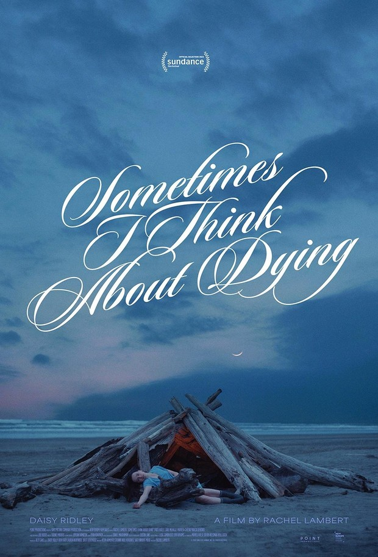

Night Swim
Genre: horor, thriller, supernatural, misteri
Pemeran utama: Wyatt Russell, Kerry Condon, Amelie Hoeferle, Gavin Warren, Nancy Lenehan
Estimasi tanggal rilis: 5 Januari 2024

The Bricklayer
Genre: action, drama, thriller, misteri
Pemeran utama: Aaron Eckhart, Nina Dobrev, Clifton Collins Jr. Tim Blake Nelson, Ilfenesh Hadera
Estimasi tanggal rilis: 5 Januari 2024
Mean Girls
Genre: drama, komedi, musikal, remaja
Pemeran utama: Angourie Rice, Reneé Rapp, Auliʻi Cravalho, Christopher Briney, Jaquel Spivey
Estimasi tanggal rilis: 12 Januari 2024

Miller's Girl
Genre: drama, thriller, komedi, kriminal
Pemeran utama: Martin Freeman, Jenna Ortega, Dagmara Domińczyk, Bashir Salahuddin
Estimasi tanggal rilis: 26 Januari 2024
13 Bom di Jakarta
Genre: action, drama, thriller
Pemeran utama: Ardhito Pramono, Chicco Kurniawan, Lutesha, Ganindra Bimo, Putri Ayudya
Estimasi tanggal rilis: 28 Januari 2024
Trinil: Kembalikan Tubuhku
Genre: horor, drama, thriller
Pemeran utama: Carmela van der Kruk, Rangga Nattra, Wulan Guritno, Fattah Amin, Shalom Razade
Estimasi tanggal rilis: 4 Januari 2024

Ancika: Dia yang Bersamaku 1995
Genre: drama, remaja, romantis
Pemeran utama: Zee JKT 48, Arbani Yasiz, Daffa Wardhana, Dito Darmawan, Ratu Rafa, Jefan Nathanio
Estimasi tanggal rilis: 11 Januari 2024

Rambut Kafan
Genre: horor, thriller
Pemeran utama: Bulan Sutena, Catherine Wilson, Yama Carlos, Virnie Ismail, Nita Gunawan, Aiman Ricky
Estimasi tanggal rilis: 18 Januari 2024
Kereta Berdarah
Genre: horor, thriller, supernatural
Pemeran utama: Hana Malasan, Zara Leola, Putri Ayudya, Fadly Faisal, Kiki Narendra, Yama Carlos
Estimasi tanggal rilis: 1 Februari 2024

Sometimes I Think About Dying
Genre: drama, komedi, romantis, kehidupan
Pemeran utama: Daisy Ridley, Dave Merheje, Parvesh Cheena, Marcia DeBonis, Meg Stalter
Estimasi tanggal rilis: 26 Januari 2024
Which Brings Me to You
Genre: drama, komedi, romantis
Pemeran utama: Lucy Hale, Nat Wolff, John Gallagher Jr., Genevieve Angelson, Ward Horton
Estimasi tanggal rilis: 19 Januari 2024
I.S.S.
Genre: fiksi ilmiah, thriller, fantasi, misteri
Pemeran utama: Ariana DeBose, Chris Messina, John Gallagher Jr., Maria Mashkova, Costa Ronin
Estimasi tanggal rilis: 19 Januari 2024